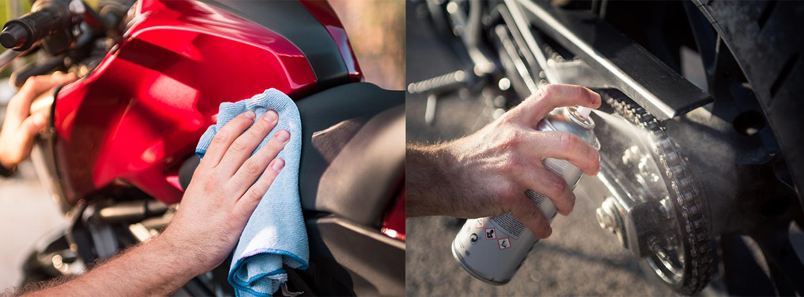

General & Periodic Maintenance for Two-Wheelers
Maintaining your two-wheeler is crucial for ensuring its longevity, performance, and safety. At Servall, we understand the importance of regular maintenance and provide comprehensive services to keep your vehicle in top condition. Our goal is to be the first choice for customers who care for their vehicles, and we achieve this through our meticulous approach to general and periodic maintenance.
General Maintenance
General maintenance involves routine checks and minor adjustments that keep your two-wheeler running smoothly. Some of the important tasks are listed below:
Oil Changes: Regularly changing the engine oil ensures that all moving parts are properly lubricated, reducing wear and tear.
Brake Inspection: Ensuring that the brakes are functioning correctly and replacing worn-out brake pads to ensure safety.
Air Filter Cleaning/Replacement: A clean air filter allows for optimal airflow to the engine, improving performance and fuel efficiency.
Airline & Fuel Line Check & Clean: In periodic maintenance, fuel and air lines are needed to stay clean, so you can experience a smooth ride again and again.
Chain Lubrication & Tension Adjustment: Properly lubricated and tensioned chains prevent premature wear and enhance the riding experience.
Battery Check: Ensuring the battery is in good condition and has sufficient charge for reliable starts.
Tire Pressure & Tread Check: Proper tire pressure and sufficient tread depth are essential for safe handling and fuel efficiency.
Periodic Maintenance
Periodic maintenance involves more thorough inspections and servicing at set intervals, usually specified in your vehicle’s owner manual. At Servall, we use a comprehensive 27-point check sheet as part of our Standard Operating Procedures (SOP) to ensure every aspect of your two-wheeler is inspected and serviced. This includes:
Engine Tuning: Adjusting the engine settings to ensure it runs efficiently, which includes checking the ignition system, fuel system, and other components.
Transmission Inspection: Ensuring that the transmission system, including the clutch and gearbox, is in good working order.
Steering Check: Inspecting the steering components for wear and tear, ensuring a comfortable and safe ride.
Exhaust System Inspection: Checking for any leaks or damages in the exhaust system that could affect performance and emissions.
Coolant Replacement: Ensuring the cooling system is functioning properly to prevent overheating and engine damage (for sport bikes only).
Full Electrical System Check: Ensuring all electrical components, including lights, indicators, and wiring, are functioning correctly.

Why Choose Servall?
Customer Convenience and Digital Reminders
At Servall, we prioritise your convenience and satisfaction. We provide several services to make maintaining your two-wheeler easier:
Digital Service Reminders: We remind you of upcoming services digitally, so you never miss an important maintenance check.
Pick Up & Drop Service: To save you time and hassle, we offer a pick-up and drop service for your two-wheeler.
Breakdown Services: In case of an emergency, our breakdown services are available to get you back on the road quickly.
Dedicated Service Advisor: Each customer is assigned a dedicated service advisor to listen to and address their concerns, ensuring personalised and attentive service.
Annual Maintenance Contract: We offer annual maintenance contracts for hassle-free, regular upkeep of your vehicle.
Transparent Billing: Our transparent billing system ensures you know exactly what you are paying for, providing clarity and trust in our services. At Servall, we pride ourselves on our commitment to quality and customer satisfaction. Our franchise model ensures that you receive top-notch service across all our locations. Our skilled technicians use the latest tools and genuine parts to keep your vehicle in prime condition. We strive to be the first choice for customers who care for their vehicles, offering reliable and efficient maintenance services that you can trust. By choosing Servall for your general and periodic maintenance needs, you ensure your two-wheeler remains in optimal condition, providing you with a safe, reliable, and enjoyable riding experience.
By choosing Servall for your general and periodic maintenance needs, you ensure your two-wheeler remains in optimal condition, providing you with a safe, reliable, and enjoyable riding experience.